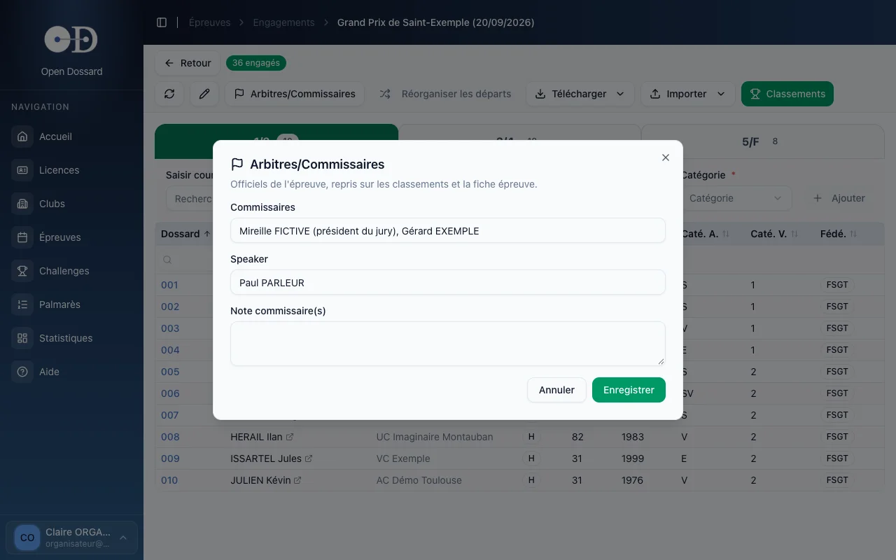

- • Un compte organisateur suffit, même sans être rattaché au club qui organise.
- • Vous pouvez engager des coureurs, déclarer les officiels et saisir les classements de n'importe quelle épreuve.
- • Une tablette ou un ordinateur portable au bord de la ligne d'arrivée suffit.
Votre compte
Les commissaires sont souvent extérieurs au club organisateur. C'est prévu : la saisie des engagements, des officiels et des classements est ouverte à tout compte organisateur, sans rattachement à un club. Pour obtenir un compte, écrivez à contact@opendossard.com (voir Démarrer).
En revanche, la fiche de l'épreuve elle-même (horaires, tarifs, lieu…) reste modifiable uniquement par les organisateurs du club.
Retrouver l'épreuve du jour
- Connectez-vous sur app.opendossard.com.
- Ouvrez Épreuves : l'épreuve du jour est juste autour de la ligne Aujourd'hui.
- Cliquez sur « Classer » pour la saisie des arrivées, ou sur le nombre d'engagés pour l'accueil des coureurs.
Déclarer les officiels
Depuis l'écran des engagements, cliquez sur Arbitres/Commissaires et renseignez :
- les commissaires (noms et rôles, par exemple « président du jury ») ;
- le speaker ;
- l'aboyeur, pour les épreuves de cyclo-cross ;
- une note des commissaires, pour consigner un incident de course ou une décision.

Cliquez sur Enregistrer. Ces informations restent modifiables à tout moment, y compris après la course.
Saisir les arrivées
La saisie est détaillée dans la page Classements. En résumé : un onglet par départ, un dossard par ligne dans l'ordre d'arrivée, Entrée pour valider, et le bouton Saisir DNF/ABD pour les abandons.
Bonnes pratiques au bord de la ligne
- Une seule personne saisit un même départ. Si deux appareils saisissent en même temps, rafraîchissez l'écran avant chaque vérification.
- Gardez la feuille papier du juge à l'arrivée : elle fait foi en cas de doute et permet de vérifier la saisie.
- Saisissez les abandons en fin de course, une fois tous les arrivants classés : ils se rangent automatiquement en bas.
- Relisez avant d'imprimer : les coupes de podium par catégorie permettent de repérer rapidement une catégorie mal renseignée.
- Prévoyez une connexion de secours (partage de connexion d'un téléphone) : la saisie s'enregistre en ligne, au fil de l'eau.
Si des catégories doivent être regroupées ou séparées, faites-le avant la première arrivée, avec Réorganiser les départs : la réorganisation devient impossible dès qu'un classement a été saisi.
Après la course
Imprimez le PDF des classements pour le speaker et l'affichage (menu Télécharger de l'écran Classements). Les corrections restent possibles ensuite : le PDF suivant les intégrera.